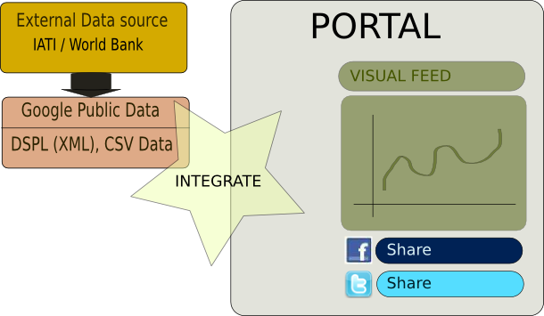

Social Media for Aid Awareness is a project that investigates the potential of Social Media like Facebook and Twitter in promoting aid awareness. This site is a demonstration of that concept.
The Concept

Data from external sources are converted to Dataset Publishing Language (DSPL) format.
The visualizations are created and hosted in Google Public Data Explorer.
The visualizations can be embedded using the javascript provided by Google.
Once embedded, they can be socialized using Facebook's Social Plugins.
The Visual Feed page demonstrates this concept. The idea is to spread the visualizations in social media.